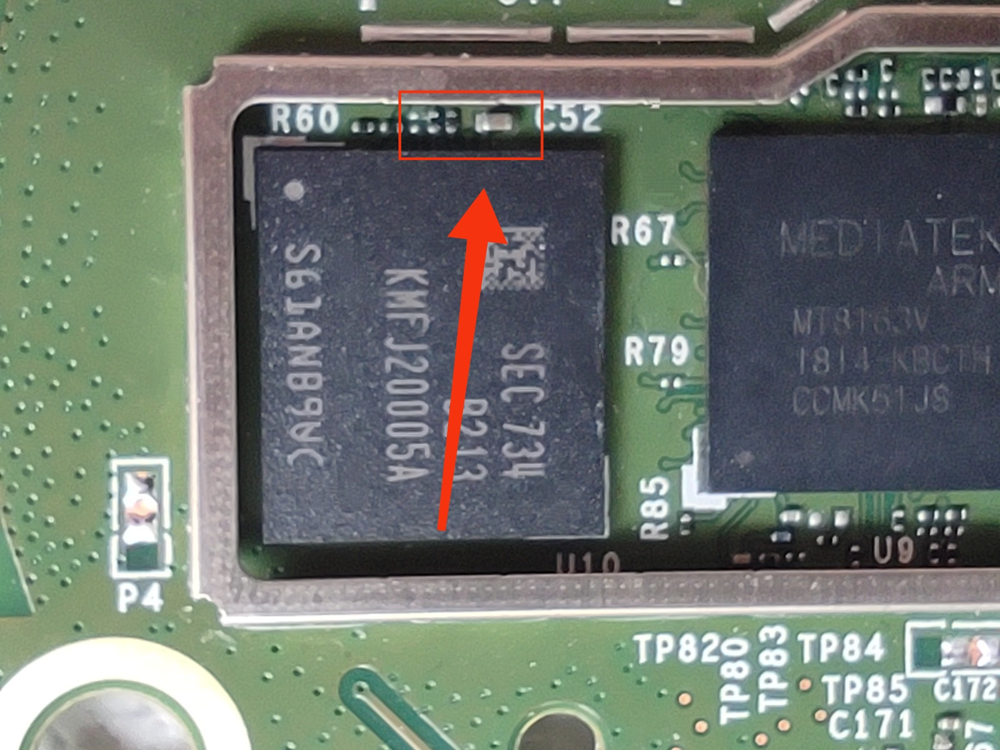

Amazon is well known for its "echo" devices. Launched in 2014, these voice assistants were used to interact with amazon's services, answer questions and stream music. As time went on the devices grew in popularity; as of 2023 they account for 21.7% of global smart speaker purchases. There have been several notable attempts to run custom software on echo devices, such as this project, however they have proven to be relatively secure. With so many devices in use, a weaponised echo device could be a very dangerous tool, allowing eavesdropping on sensitive conversation and giving false resonses, or in this case, extracting sensitive information such as wifi passwords. More modern devices from the company run fireOS, Amazon's modified version of Android, on a MediaTek CPU. This is interesting, as it means both the hardware and software are similar to that found on Amazon Fire tablets. I have been experimenting with an echo dot 2nd generation, which uses a MT8163 processor found in the HD 8 from 2018. This fire tablet was rooted using an exploit known as amonet, which means it was possible to port this exploit to the echo.
Exploiting the processor: you can too!
After a few minor modifications, I managed to make the main amonet script dump the contents of the storage(eMMC flash memory). The modified version can be found here, and a graphical version is available here. The memory can be dumped when the device is in bootrom mode, which can be forced by placing a piece of tin foil to short the capacitor shown below to the RF shield, which temporarily prevents it from being able to boot. For a detailed disassembly guide please check ifixit.
Once I had the filesystem, I began to analyse its contents, and what I found was very interesting. It seemed to use a tool called wpa_supplicant to manage its wireless connections, which is not uncommon on older android versions. When using this tool, it is good practice to hash the password for the wireless network before storing it in the configuration file (encrypt it in a way that cannot be reversed). This can be done with one simple command (wpa_passphrase), however, amazon's internal team lab126 (who develops their consumer hardware), chose not to use this. It may not seem like a significant decision, however when you consider that anyone with physical access to an amazon device using this vulnerable processor (it is also used by multiple echo show devices) can extract network passwords with relative ease.
What does this mean?
Storing passwords in plain text is a major security risk in hotels or businesses using the devices on their internal or private wireless networks, giving any potential attackers access to any other equipment on this network or allowing them to create a rogue network and redirect traffic or conduct a MITM (man-in-the-middle) attack. It may also breach the Data Protection Act which states customer data must be 'handled in a way that ensures appropriate security'. Hashing passwords is an industry standard, and for a company that has sold their hardware to millions, it is completely unacceptable to not encrypt this data. But it gets even worse. A plain-text configuration file located in /system/etc includes API keys for spotify zeroconf and eSDK APIs, if accessed these could allow anybody to play audio from the device and potentially send audio to fake a notification or alert.
Modifications
As for booting modified software, it is difficult but not impossible. Unfortunately, I bricked my echo by carelessly flashing the wrong file, but not before finding some useful information. All mediatek devices use something called a preloader. It is essentially a loader for the bootloader, a very low level piece of software that runs on the cpu each boot. If anybody successfully patches the preloader to bypass checks of the mediatek 'little kernel' (lk) and 'unlock_code', we can write zeros to the start of the preloader and boot from the patched version. However, this would mean using a computer every time you boot your echo. As the device runs fireOS, the command fastboot oem flags fos_flags:0x80 should work to disable dm-verity, which is used to verify the integrity of android images and allow us to run unsigned code. This would be very serious as it would allow devices to be modified to send data to an attacker instead of amazon.
Conclusion
In summary, whilst some aspects of the echo dot are very secure they are not immune to tampering and modification, and demonstrate an extreme lack of security when it comes to password storage. When designing embedded hardware, it is essential to consider physical security, and I hope that we can bring this issue to Amazon's attention and find a permenant solution to prevent any security breaches.